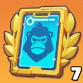
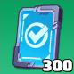
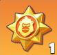
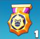
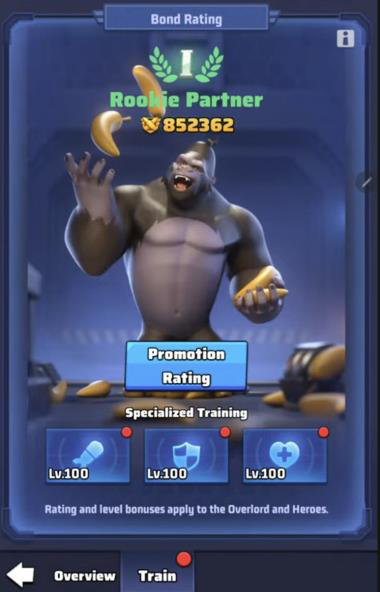
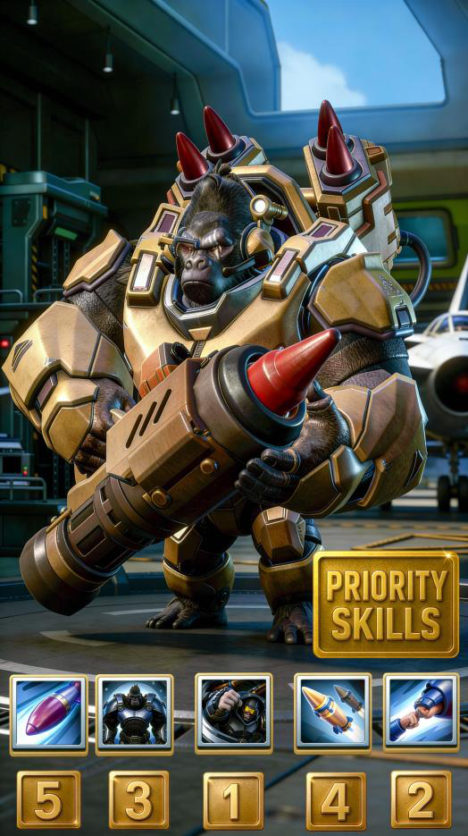

Guide de base du Gorille Overlord dans Last War
1. Le premier objectif : Rookie Partner I
Beaucoup de joueurs pensent qu’il suffit de débloquer le gorille pour l’utiliser au combat. Ce n’est pas le cas. Lorsque le gorille apparaît à la fin de la Saison 2, il ne peut pas encore accompagner tes troupes. Pour pouvoir le déployer dans une escouade, tu dois atteindre le rang « Rookie Partner I », et les objets nécessaires sont :



- Si tu joues gratuitement, il te faudra un certain temps pour déployer le gorille (des semaines ou des mois, encore à calculer). Si tu veux dépenser de l’argent, plusieurs packs permettent d’avancer très vite et de déployer le gorille en environ 1 semaine pour près de 500 dollars.
- Après avoir atteint l’objectif de déploiement, tu peux renforcer le Gorille avec de l’entraînement supplémentaire, des promotions de rang et l’amélioration de ses compétences en utilisant aussi les objets suivants :

Insigne de compétence de l’OverlordPour déployer le gorille, regarde sa base : tu verras trois arbres d’entraînement indépendants. Tu dois entraîner simultanément Attaque, Défense et Survie. Le système exige que les trois spécialités atteignent certains niveaux pour débloquer les différentes promotions. Lorsque chaque spécialité atteint le niveau 100, tu peux effectuer la promotion au rang « Rookie Partner I » en utilisant 4 Bond Badges.
Après cela, tu pourras déployer le gorille dans l’une de tes escouades.
À ce moment-là, seront également débloqués :
- Les compétences du gorille.
- Les promotions avancées.
- L’arbre complet des compétences.

2. Priorité des compétences
Tu dois donner la priorité aux compétences du gorille dans l’ordre suivant :
